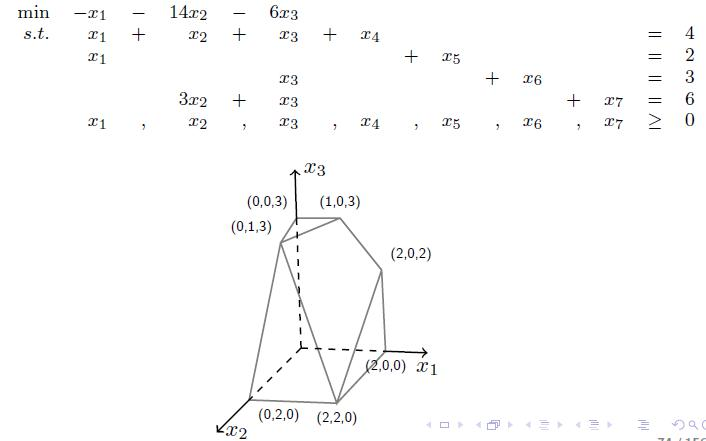
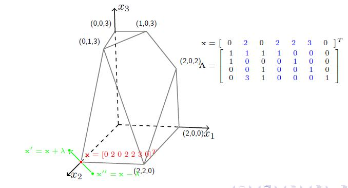
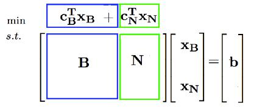
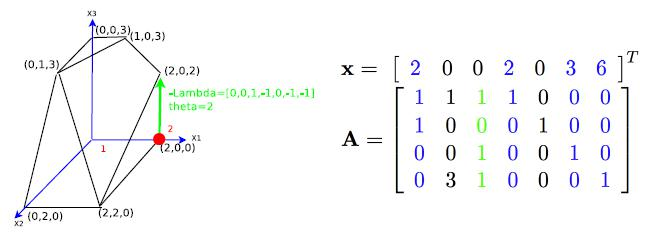
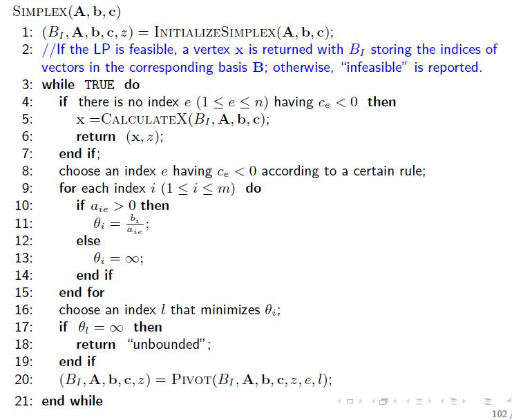
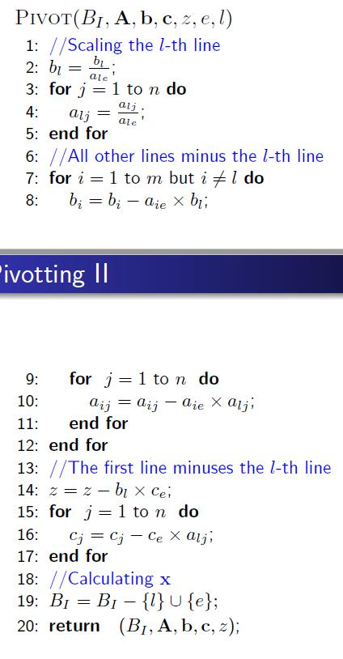
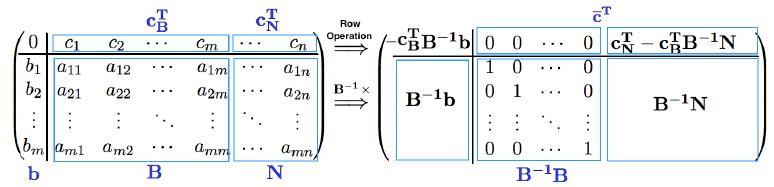

线性规划(Linear Programming, LP)中的一种常见的经典的算法之一，而单纯型算法就是非常常用的用来解决这个问题的方法之一。
在中学的时候我们曾经简单的接触过线性规划，当时的做法基本上是在二维平面上做出图形，标出可行域，以固定斜率画直线簇。而往往最优解的地方是通过（凸）可行域的顶点。例如：
$$
\begin{aligned}
\begin{split}
\max& \quad x_3+x_4 \\
s.t.& \quad -x_3+2x_4\leq 2 \\
&\quad 3x_3-2x_4\leq 6 \\
&\quad x_3, x_4\geq 0
\end{split}
\end{aligned}
$$
在二维平面上做可行域，在平面（4,3）点处可以取得目标函数最大值。
之后我们将证明：最优解一定是可行域（凸超几何体）的顶点之一。先假设这个成立，我们使用“改进-停止”（improve-stopping）的方法，即给定一个可行域的顶点，求值，沿一条边到达下一个顶点，判断是否能够改善解，直到达到停止条件。
那么
- 为什么最优解一定在顶点？
- 怎么得到顶点？
- 怎么实现沿一条边到达下一个顶点？
- 什么时候停止？
当可以解答这些问题了之后，我们就可以大致了解单纯型算法的概要了。
线性规划问题的形式
一般形式
$$
\begin{equation}
\max. \sum^n_{j=1}c_jx_j \\
s.t.
\left\{
\begin{aligned}
&\sum^n_{t=1} a_{it}x_t \leq b_i \quad i=1,2,\cdots,m_1 \\
&\sum^n_{t=1} a_{jt}x_t = b_j \quad j=m_1+1,\cdots,m_1+m_2 \\
&\sum^n_{t=1} a_{kt}x_t \geq b_k \quad k=m_1+m_2+1, \cdots, m_1+m_2+m_3 \\
&x_t\geq 0 \quad t=1,2,\cdots, n
\end{aligned}
\right.
\end{equation}
$$
标准形式
线性规划问题的一般形式缺少不等式约束，而只有等式约束以及变量非负约束的时候称为线性规划问题的标准形式。然而在实际问题中几乎不存在这样完美的约束条件，所以我们在解决问题的时候要将一般形式转换为标准形式。任意一个线性规划问题可以转换为约束标准型线性规划问题。
一般线性规划化为标准型：
若目标函数为求最小$\min$，可以通过取负，来求取最大值。
若约束不等式为小于等于不等式，可以在等式左端加入非负松弛变量，转变为等式。
同理，若约束不等式为大于等于不等式，可以在等式左端减去一个非负松弛变量，变为等式。
若存在取值无约束的变量，可以转变为两个非负变量的差值，例如：
$$
\begin{equation}
-\infty \leq x_k \leq +\infty \Rightarrow
\left\{
\begin{aligned}
x_k = x_m-x_n \\
x_m,x_n \geq 0 \\
\end{aligned}
\right.
\end{equation}
$$
规范形式
规范形式就是在标准形式的基础上添加人工变量，以便于在不容易的到初始基可行解的时候获取第一个初始可行解。详情见两阶段单纯型算法（Two-Phase Simplex Method）。
凸多边形的最优解在顶点取得
下面我们来证明为什么最优解一定在顶点。
考虑最小化问题，目标函数$\mathbf{c}^T \mathbf{x}$，有一个在可行域内部的最优解$\mathbf{x}^{(0)}$，因为凸多边形内幕任一点都可以表示成顶点的线性组合，即对于顶点$\mathbf{x}^{(k)}, k=1,2,\cdots,n$，有
$$
\mathbf{x}^{(0)}=\sum_{k=1}^{n}\lambda_k\mathbf{x}^{(k)}, \\
\sum_{k=1}^n \lambda_k=1
$$
假设$\mathbf{x}^{(i)}$是所有顶点中使得目标函数$\mathbf{c}^T \mathbf{x}$最小的顶点，那么
$$
\begin{equation}
\begin{split}
\mathbf{c}^T\mathbf{x}^{(0)} &= \sum_{k=1}^{n}\lambda_k\mathbf{c}^T\mathbf{x}^{(k)} \\
&\geq \sum_{k=1}^{n}\lambda_k\mathbf{c}^T\mathbf{x}^{(i)} \\
&= \mathbf{c}^T\mathbf{x}^{(i)}
\end{split}
\end{equation}
$$
因此，总有一个顶点，它的目标函数值不比内部的点差。
如何得到凸多边形顶点
下面要说明的定理是：对于可行域方程组$\mathbf{Ax=b}$，该方程确定的凸多边形的任意一个顶点对应$\mathbf{A}$的一组基底。
顶点对应一组基底

这个例子是松弛型约束的线性规划，原来的变量有三个分别是x123，加上后面四个变成标准型等式，形成的可行域如上图所示。现在取顶点$(0,2,0)$分析。（在实际问题中，也许没有办法获得起始顶点，这时候要采用大M算法或者两阶段单纯型算法，目前在计算机计算的大规模线性规划问题中，一般使用两阶段单纯型算法）将顶点带入约束中，可以计算得到一个完整解$x=(0，2，0，2，2，3，0)$。取出矩阵A中对应的x不为0的列，即下图中表蓝的几列（用$\mathbf{a}_2, \mathbf{a}_4, \mathbf{a}_5, \mathbf{a}_6$表示），那么这几列就是线性无关的，考虑$m<n$（约束的条件数小于松弛后的变量个数），那么自由解有$n-m$维，因此挑出来的列必有$m$个，构成一组基底。
下面来证明为什么他们线性无关。假设它们线性相关，即存在一组$\lambda\neq\mathbf{0}$使得$\lambda_2\mathbf{a}_2+\lambda_4\mathbf{a}_4+\lambda_5\mathbf{a}_5+\lambda_6\mathbf{a}_6=0$，也就是说，可以构造一组，也就是说，可以构造一组$\lambda=[0, \lambda_2, 0, \lambda_4, \lambda_5, \lambda_6, 0]$，使得$\mathbf{A}\lambda=0$。那么还可以再构造两个异于。那么还可以再构造两个异于x的解：的解：$x’=x+\theta\lambda$和$x’’=x-\theta\lambda$。它们都满足。它们都满足$\mathbf{Ax=b}$。并且可以通过控制。并且可以通过控制\theta取得很小的正值，使得这两个解都满足大于的约束。由此，这两个解都在凸多面体内，并且有取得很小的正值，使得这两个解都满足大于0的约束。由此，这两个解都在凸多面体内，并且有$x=\frac{1}{2}(x’+x’’)$，但是这是不完美的，因为一个凸多面体的顶点是不能被内部的点线性表示的，因此这几列是构成一组基底的。

在这里，我们还可以对每一组解，都将$\mathbf{A}$的列重新排列一下，将解向量也排列一下，写成分块矩阵的形式，因为重新排列之后形成的$\mathbf{x}_N = 0$ ,那么就会有$\mathbf{x}_{\mathbf{B}}=\mathbf{B}^{-1}\mathbf{b}$，并且目标函数转化为$\mathbf{c^Tx=c_B^TB^{-1}b}$。这是两个很有用的公式，在后面的单纯型算法的理解上很有帮助。

一组基底对应一个基可行解（顶点）
有了上面的知识，给定一组基底$\mathbf{B}$，我们直接构造$\mathbf{x}=[\mathbf{B^{-1}b}, \mathbf{0}]^T$，只要说明他不能被两个异于它的内部点线性表示即可。假设有两个内部点$\mathbf{x}_1, \mathbf{x}_2$，满足$\mathbf{x}=\lambda_1\mathbf{x}_1+\lambda_2\mathbf{x}_2$，由于$\mathbf{x}_N=0$，并且这些解的元素都大于等于0，因此$\mathbf{x_1}_{\mathbf{N}}=\mathbf{x_2}_{\mathbf{N}}=0$。而又因为$\mathbf{Ax_1=Ax_2=b}$，因此$\mathbf{x_1}_{\mathbf{B}}=\mathbf{x_2}_{\mathbf{B}}=\mathbf{B^{-1}b}$。即这两个解和x相同，因此x是顶点。
如何从一个顶点沿边到达另一个顶点
这里要研究怎么改善一个解，在图形上讲就是如何从一个顶点出发沿着边找到另一个顶点。上一节我们知道了一个顶点对应一组基底，而且一个矩阵的基底有多个，那么是否可以通过基底的变换来使得顶点变换呢。举个例子：

图中红色点对应的是之前我们拿来举例子的完全解$\mathbf{x}=[2,0,0,2,0,3,6]$，对应的基底是$\mathbf{B}=\{\mathbf{a}_1，\mathbf{a}_4，\mathbf{a}_6，\mathbf{a}_7\}$，考虑向量$\mathbf{a}_3$，即绿色的列，可以表示成：
$$
\mathbf{a}_3=0\mathbf{a}_1+1\mathbf{a}_4+1\mathbf{a}_6+1\mathbf{a}_7
$$
补全式子，有
$$
0\mathbf{a}_1+0\mathbf{a}_2-1\mathbf{a}_3+1\mathbf{a}_4++0\mathbf{a}_5+1\mathbf{a}_6+1\mathbf{a}_7=0
$$
写出系数：$\lambda=[0,0,-1,1,0,1,1]$，它就是对应上图中的绿色向量（相反方向）。因此只有沿着这个方向走适合的步长$\theta$，就能到达下一个顶点。即新旧顶点的关系为：
$$
\mathbf{x’}=\mathbf{x}-\theta\mathbf{\lambda}\quad(\theta>0)
$$
那么多大的$\theta$合适呢？我们很容易知道$\mathbf{x}’$能够满足$\mathbf{Ax=b}$，因为$\mathbf{A\lambda=0}$，现在要保证的就是$\mathbf{x}’$的各个分量大于等于0。
$$
\because \mathbf{A\lambda=0} \& \mathbf{x}-\mathbf{x’}=\theta\mathbf{\lambda} \\
\therefore \lambda = \frac{\mathbf{x}-\mathbf{x’}}{\theta} \& \mathbf{A} \frac{\mathbf{x}-\mathbf{x’}}{\theta}=0 \\
\therefore \mathbf{x} = \mathbf{x}’ \& \mathbf{Ax} = \mathbf{Ax’} = \mathbf{b}
$$
对于$\lambda_i\leq0$的项，相减之后大于0，满足要求。但是对于$\lambda_i>0$的项，需要小心，因为要保证相减之后仍然大于等于0，我们设：
$$
\theta=\min\limits_{\mathbf{a}_i\in \mathbf{B},\lambda_i>0}\frac{x_i}{\lambda_i}
$$
就能保证。在上面的例子中，，所以新的解是$\mathbf{x’}=[2,0,2,0,0,1,4]$，对应的基底是$\mathbf{B’}=\{\mathbf{a}_1，\mathbf{a}_3，\mathbf{a}_6，\mathbf{a}_7\}$，到这里，看似我们找到了运动到下一个顶点的方法，也就是先找一个非基向量，将它写成用基向量表示的形式，提出系数，确定步长，得到新的解。但是还有一个小问题，我们看到实际上$\mathbf{B}’$和$\mathbf{B}$差了一个向量，相当于把$\mathbf{a}_4$换出去，把$\mathbf{a}_3$换进来。我们成这个过程为换基，后面算法实现部分叫pivot。那么怎么保证换完这个向量之后，仍然是基呢？
证明：$\mathbf{B’}=\mathbf{B}-\mathbf{a}_l+\mathbf{a}_e$仍然是基。（l for leave, e for enter）
假设$\mathbf{B}’$线性相关，
那么存在$< d_1,d_2,\cdots,d_{l-1},d_{l+1},\cdots,d_m, d_e > \neq 0$，
使得$\sum_{k} d_k \mathbf{a}_k =0$而$\mathbf{a}_e = \sum_{i=1}^m \lambda_i \mathbf{a_i}$，带入得到：
$$
(d_1+d_e\lambda_1)\mathbf{a_1}+\ldots+(d_e\lambda_l)\mathbf{a}_l+\ldots+(d_m+d_e\lambda_m)\mathbf{a}_m=0
$$
这里是证明的关键之处：我们在设置$\theta$的时候的做法，加入最终选出来的使得$\frac{x_i}{\lambda_i}$最小的那一项下标为p，那么得到的新的解的第p项必然为0，相当于把$\mathbf{a}_p$换了出去。在上面这个例子中$p=4$。而因为我们只考虑$\lambda_i>0$的基向量，因此被换出去的基$\mathbf{a}_l$对应的$\lambda_l>0$，因此上式中有$d_1=d_2=\ldots=d_m=d_e=0$，与原假设矛盾，因此$\mathbf{B’}$也是线性无关的。
到这里，我们了解了单纯型算法就是通过反复的及变化呢（通过响亮的进出）来找顶点，从而找到达到最优值的顶点。但是还是有些细节需要考虑，比如，怎么选入基向量？改善（improve）的过程什么时候停止？
入基向量的选择以及停止准则
以最小化问题为标准，我们的最终目标是最小化$\mathbf{c^Tx}$，因此一个很自然的贪心想法是每步的改善都尽可能地大，因此可以计算一下更新的目标函数值和原来的差值，取使得变化大的顶点继续下一步迭代。那么这个差值怎么能够向量化地计算呢？只有向量化地计算，才能避免一个一个地计算比较，提高效率。
假设$\mathbf{B}=\{\mathbf{a}_1, \mathbf{a}_2,\ldots, \mathbf{a}_m\}$，那么对于任何一个非基向量$\mathbf{a}_e$，
都有$\mathbf{a}_e=\lambda_1\mathbf{a}_1+\ldots+\lambda_m\mathbf{a}_m$。
将$\lambda$写完整：$\lambda=[\lambda_1,\lambda_2,\ldots,\lambda_m,0,0,\ldots,-1,\ldots,0]^T$，
差值$\mathbf{c^Tx’-c^Tx=c^T(-\theta\lambda)=\theta(c_e-\sum_{a_i\in B}\lambda_ic_i)}$，因此我们要选使得这个值的绝对值最大的$\mathbf{a}_e$。那么什么时候表示找到的最优值了而应该停止了呢？和明显，就是对于所有$\mathbf{a}_e$，这个差值都大于等于0，即目标函数不再减小。因此，每次迭代都要先计算差值，如果存在小于0的差值，就选一个使得差值绝对值最大的作为入基向量。
接下来要考虑向量化操作。首先我们看一下$\lambda$是否能向量化表示：由于$\mathbf{B}\lambda=\mathbf{a}_e$($\lambda$只取基系数部分)，因此$\lambda=\mathbf{B^{-1}}\mathbf{a}_e$，如果对整个矩阵$\mathbf{A}$左乘$\mathbf{B}^{-1}$，这就很有意思了，所有的非基列将变成该非基向量用基向量表示的系数，而左右的基列将变成$e_k$，即合起来成为一个单位阵的形式。只是很关键的一步，在单纯型算法实现中也涉及到。进一步，我们取$\mathbf{c}$的基部分$\mathbf{c}_B$，这样$\mathbf{c_B^TB^{-1}A}$就等于了上式中的$\sum_{\mathbf{a}_i\in \mathbf{B}}\lambda_i\mathbf{c}_i$的向量化形式（对所有的非基向量一同操作）。然后再加上一部分，变成$\mathbf{c^T-c_B^TB^{-1}A}$这就是最终的形式，称之为检验数$\bar{\mathbf{c}}$。很容易验证，基向量对应的检验数都是0，我们的目标就是通过迭代，使得$\bar{\mathbf{c}}\geq0$，这时对于任何一个可行解$\mathbf{Ay=b,y\geq0}$，都有$\mathbf{c^Ty}\geq\mathbf{c_B^TB^{-1}Ay=c_B^TB^{-1}b=c_B^Tx_B=c^Tx}$，即$\mathbf{x}$就是最优的。
单纯型算法的核心：单纯型表
单纯型算法呼之欲出。将上面的东西整理整一个简短的高效的可行算法并不简单。伪代码如下：


另外一个单纯型表：

现在我们来对算法进行分析，将算法的每一个步骤和我们上面的介绍对应起来。
- SIMPLEX算法一开始调用INITIALIZESIMPLEX找到一个初始基可行解，这在某些情况下很简单，当$\mathbf{b}\geq0$时，他就是一个初始基可行解，否则，可能要用到两阶段法、大M法等求，这不是重点。
- WHILE循环内，只要找到一个$c_e<0$，就继续迭代。第10到16行就是通过设定$\theta$找到出基向量。
- 最关键最有意思的就是PIVOT算法，他巧妙地将我们介绍的繁杂操作使用一个简单的高斯行变换就实现了。而这个算法的载体就是单纯形表，如上图，左上角是目标函数值相反数$-z$，第一行是检验数$\bar{\mathbf{c}}$，左下角是基对应的部分解（其他部分是0，不用写出），右下角是矩阵$\mathbf{A}$。他始终被分块成两部分，基向量部分始终以单位阵的形式存在。注意左边的部分解每个分量都是严格对应着一个基向量，即他们是有顺序的。
- 一行一行地看PIVOT算法。输入参数告诉我们下标为$l$的向量被换出，因此找到他对应的那行，暂称为第$l$行，这一行对应的基的下标要被换成$e$，那么为什么更新后对应的解是$\frac{b_l}{a_{le}}$呢，要注意，其实这个值就是$\theta$，$b_l$就是旧的$x_i$，$a_{le}$就是$\lambda_i$（上面已经解释了乘上$\mathbf{B}^{-1}$后每一列都是系数）。那么为什么更新后是$\theta$呢？我们回到式子$\mathbf{x’=x-\theta\lambda}$，由于$b_l$现在对应的新向量不是$\mathbf{x}$对应的基向量，因此$\mathbf{x}$在该位置的值是0，而我们知道$\lambda$在入基向量对应的位置的值是-1，因此$0-(-1)\theta=\theta$。
- 第3到4行，将第$l$行除以$a_{le}$，目的就是将$a_{le}$变成1，因为要始终保持基是以单位阵的形式存在。
- 第8行，就是在执行$\mathbf{x’=x-\theta\lambda}$的操作，得到新解。
- 第10行，高斯行变换，你会发现这样操作完后，入基列就变成和刚才出基列一样，高斯行变换保证了矩阵的性质。
- 第14行，我们知道$-z=0-\mathbf{c_B^TB^{-1}b}$，由于旧有的基对应的$c$都是0，而只有新换入的向量对应的$c_e$不为0，具体写一下，减掉的那部分就只有$c_e$和他对应的解$b_l$的乘积了。同理，第16行，$\mathbf{c^T-c_B^TB^{-1}A}$，由于也是只有$c_e$不为0，因此就和他对应的$\mathbf{A}$的第$l$行相乘了。
到此，终于介绍完了单纯形算法。其他还有一些要注意的地方，比如一定要注意检验数和原目标函数的$\mathbf{c}$是完全不一样的概念，在原约束为不等式，需要加松弛变量的情况下，他们可能相等，但心里一定要区分它们，同时，这种情况下，基很容易找，就是松弛变量的那几列构成的单位阵。但是如果原约束是等式，就需要自己找基，并且这时检验数往往就和目标函数参数不同了。
声明：以上所用的截图均来自中科院计算所B老师的课程PPT
两阶段单纯型算法（Two-Phase Simplex Method）
单纯型法简单来说可以归纳为三个步骤，即
- 初始基可行解
- 解的迭代（优化，improve）
- 最优性检验
但是并不是所有的线性规划最优化问题都能够很简单的找到初始的基可行解，那么就需要考虑如何获取第一个初始可行解。
对于不是规范型的标准型，用单纯型法求解的办法就是添加人工变量（Artificial Variables），使标准型认为的变为规范型。
第一阶段：不考虑原问题是否存在基可行解，给原线性规划模型加入人工变量，并构造仅含有人工变量的目标函数，实现极小化。假设$x_{n+1},x_{n+2},\cdots,x_{n+m}$为加入的人工变量，则新的目标函数为人工变量的累加和，并求极小化：
$$
\min. w=\sum^m_{j=1}x_{n+j}
$$
约束方程通过添加人工变量变成了规范型。然后用单纯型法求解上述模型，若人工变量能够全部出基，即取值为0，$w=0$，这说明原问题存在基可行解，可以进入第二阶段计算。否则，原问题无可行解，应停止计算。第二阶段：对原目标函数求最优解。
第一阶段迭代的目标是使人工变量出基，得到满足原约束方程组的一个基可行解，而第二阶段是要得到一个使原目标最优的基可行解。故目标函数应换回来，同时去掉人工变量，继续用单纯形法寻求最优解。要注意人工变量不同于松弛变量，松弛变量是为了要让非标准型变为标准型，而人工变量是为了让标准型变为规范型。